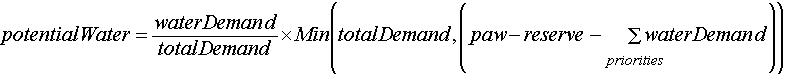

|
AWARE: Analyses de bassins versants par des SMA pour le développement
environnementale et économique durable
S. Farolfi (coordonnateur) - S. Perret - L. Erasmus - P. Bommel ContexteDepuis 1994, le gouvernement sud africain à commencer de profondes
réformes pour lutter contre la pauvreté rurale et les inégalités
sociales héritées du régime de l’apartheid.
Parmis ces reformes, il a adopté une nouvelle loi sur l’eau
qui promeut
La loi national sur l'eau en Afrique du Sud promeut la gestion de ressource
intégrée et décentralisée par la mise en place
de La mise en oeuvre de cette loi et ses à-côtés (NWRS : Stratégie de Ressource Nationale sur l'Eau) soulève de nombreuses questions d’ordre social et économique dans un contexte
Dans ce contexte, il est à croire qu’une des principales tâches des agences et comités de gestion de bassins hydrologiques (CMA et CMC : Catchment Management Agency/Commitee) sera de réguler et de contrôler la demande en eau. L’approche qui a été décidée repose sur l’allocation de permis d’usage de l’eau. Ce procédé soulève de nombreuses questions telles
Pour essayer de répondre à ces questions, nous avons construit plusieurs modèles en collaboration avec des chercheurs de l'Université de Prétoria, du Cirad et des fonctionnaires du ministère des Eaux et des Forêts d’Afrique du Sud (DWAF), dont le modèle multi-agent AWARE. Présentation de AWAREAWARE est un modèle multi-agent construit sur Cormas pour examiner l'efficacité économique, le caractère de durabilité environnemental et l'équité sociale de certaines des stratégies potentielles de gestion d'eau que les CMC pourraient employer. Bien que les processus réels se développeront progressivement, les objectifs d'AWARE consistent à examiner des situations dans lesquelles, une fois établies, les CMA et les CMC délivreront les permis d’usage de l’eau. AWARE est donc un outil orienté simulation prospective. Les agents de ce système sont les CMA et les utilisateurs (secteurs d'utilisation d'eau). Ces derniers sont les communautés, les conseils d'irrigation, les agences de sylviculture, les industries et les mines. A cause de présence des principaux secteurs d'utilisation d'eau et à cause de la disponibilité de données, nous avons choisi comme secteur d'étude, Steelpoort, le sous-bassin hydrographique du fleuve Olifants. La répartition des différents secteurs provient de données issues d'un système d'information géographique (SIG). L'écoulement annuelle moyen a été utilisé pour calculer le volume total d'eau disponible par les CMC. Il inclut l'eau pour les usages domestiques (besoins vitaux de base) et l'eau essentielle pour la conservation des écosystèmes (la réserve écologique). Attribution des permis Des quantités annuelles d'eau sont potentiellement allouées
par le CMA tous les 5 ans. Lorsque les permis doivent être attribués,
les
 paw = Eau Potentiellement disponible (Potential Available Water). Le tarif des permis est calculé en fonction du type d'utilisateur
et en fonction des unités d'eau pour lesquelles ils ont reçu
un quota. Ces parts sont employées pour calculer le revenu annuel
du CMA. Le revenu du CMA est donc indépendant de la quantité
réelle d'eau reçue par les utilisateurs. En d'autres termes,
on ne paie pas la quantité d'eau utilisée, mais un permis
pour un quota. Allocation de l'eauLe pas de temps du modèle est l'année. Pour calculer le volume annuel d'eau réellement disponible chaque année, une fluctuation périodique et aléatoire a été ajoutée à l'écoulement annuel moyen. Si une année donnée, la quantité d'eau disponible est supérieure ou égale à la somme des quotas délivrés par le CMA, chaque utilisateur reçoit un volume d'eau en accord avec sa licence. Dans le cas contraire, chaque utilisateur reçoit une quantité d'eau en proportionnelle à son permis. Chaque utilisateur fait une évaluation annuelle de la quantité d'eau qu'il reçoit. Si cette part n'est pas satisfaisante, une plainte de manque d'eau est envoyée au CMA. Conclusion AWARE permet d'examiner les conséquences économiques,
environnementales et sociales de stratégies que le CMA peut Etant un modèle individu-centré, AWARE permet d'élucider des résultats globaux résultant de comportements individuels qui étudiés isolément semblent évidents. AWARE peut seulement être appliqué aux situations pour
lesquelles il a été construit à l'origine. Autrement
dit le modèle Pour en savoir plus, vous pouvez visiter le site web du CeePA web (The Centre for Environmental Economics and Policy in Africa) ou contacter l'auteur. |